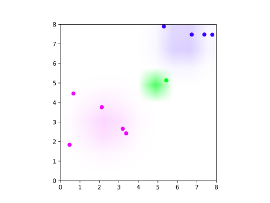

This file contains an example of non-parametric clustering using a Dirichlet process. The idea of clustering is that we have some data points and we try to group them into clusters that make sense.
{-# LANGUAGE ExtendedDefaultRules #-}
module ClusteringDemo where
import Control.Monad
import Data.Colour.RGBSpace.HSV
import Data.Colour.SRGB
import Data.List
import Data.Monoid
import Distr
import Distr.DirichletP
import Distr.Memoization
import LazyPPL
import Numeric.Log
import Graphics.Matplotlib hiding (density)
-- In Ghci you will need to :set -fobject-codedataset = [(7.7936387, 7.469271), (5.3105156, 7.891521), (5.4320135, 5.135559), (7.3844196, 7.478719), (6.7382938, 7.476735), (0.6663453, 4.460257), (3.2001898, 2.653919), (2.1231227, 3.758051), (3.3734472, 2.420528), (0.4699408, 1.835277)]plotDataset :: IO ()
plotDataset = do
let filename = "images/clustering-dataset.svg"
putStrLn $ "Generating " ++ filename ++ "..."
file filename $ mplBivarNormal 0 0 100 0 (scatter [0,8] [0,8] @@ [o2 "color" "white"]) % scatter (map fst dataset) (map snd dataset) @@ [o2 "color" "black"]
putStrLn $ "Done."We first define a generic clustering model that uses a Chinese Restaurant process. The parameters for our generic clustering model are:
xs :: [a], a
data setpparam :: Prob b,
from which we sample a parameter for each clusterlike :: b -> a -> Double,
parameterized likelihood function, which we use to score the cluster
assignment for each data pointcluster :: [a] -> Prob b -> (b -> a -> Double) -> Meas [(a, Double, b)]
cluster xs pparam like =
do
-- sample a distribution from a Dirichlet process
rest <- sample $ newRestaurant 0.3
-- lazily sample an infinite list of cluster parameters
param <- sample $ memoize $ const pparam
-- lazily sample an infinite list of colors
color <- sample $ memoize $ const $ uniformbounded 0.2 1
-- for each data point, sample a cluster and return
-- the corresponding color and parameter
forM xs
( \x -> do
i <- sample $ newCustomer rest
score $ like (param i) x
return (x, color i, param i)
)Here we are using our Chinese Restaurant process interface
(Distr.DirichletP). It involves abstract types Restaurant and
Table,
and provides two functions:
newRestaurant :: Double -> Prob Restaurant,
which provides a new restaurant;newCustomer :: Restaurant -> Prob Table,
which says which table a new customer will sit at.We model data points by customers to a restaurant, and they are in
the cluster if they sit at the same table. The restaurant is implemented
in Distr.DirichletP by a lazy stick-breaking
construction.
The tables support stochastic memoization via a function memoize :: (Table -> Prob a) -> Prob (Table -> a).
This is defined using laziness (lazy tries). This memoization allows us
to randomly assign parameters and colours to clusters/tables.
We try clustering on the synthetic data set dataset.
example :: Meas [((Double, Double), Double, (Double, Double, Double))]
example =
cluster
dataset
(do x <- normal 5 4; y <- normal 5 4; prec <- gamma 2 4;
return (x, y, 1 / sqrt prec))
(\(x, y, s) (x', y') -> normalPdf x s x' * normalPdf y s y')infer =
do
xycws' <- mh1 example
let xycws = take 20000 xycws'
let maxw = (maximum $ map snd xycws :: Product (Log Double))
let (Just xyc) = Data.List.lookup maxw $
map (\(z, w) -> (w, z)) xycws
-- for illustration we plot the MAP sample
plotCoords "images/clustering-map.svg" xyc This produces the following cluster asssignment:

plotCoords :: String -> [((Double, Double), Double, (Double, Double, Double))] -> IO ()
plotCoords filename dataset = do
putStrLn $ "Generating " ++ filename ++ "..."
let starterplot =
scatter [0,8] [0,8] @@ [o2 "color" "white"]
let gaussians = (foldl (\p (c,x,y,s) -> mplBivarNormal x y s c p) starterplot (nub $ map (\(_,c,(x,y,s))->(c,x,y,s)) dataset))
let plot = foldl
(\p -> \((x,y),c,_) -> let c' = hsv (c * 365) 1 1 in
p % scatter [x] [y] @@ [o2 "color" [channelRed c',channelGreen c',channelBlue c']])
gaussians
dataset
file filename plot
putStrLn $ "Done."
mplBivarNormal :: Double -> Double -> Double -> Double -> Matplotlib -> Matplotlib
mplBivarNormal mux muy sigma c p =
p % imshow ws @@ [o2 "interpolation" "bilinear"
,o2 "origin" "lower"
,o2 "extent" [0::Double, 8, 0, 8]]
where delta = 0.025::Double
xs = [0.0+delta..8.0]
ys = [0.0+delta..8.0]
r = channelRed(hsv (c * 365) 1 1)
g = channelGreen(hsv (c * 365) 1 1)
b = channelBlue(hsv (c * 365) 1 1)
ws = [[[r,g,b,pdfBivariateNormal x y sigma sigma mux muy 0.0] | x <- xs] | y <- ys]
pdfBivariateNormal x y sigmax sigmay mux muy sigmaxy =
1/(2*pi*sigmax*sigmay*(sqrt(1-rho^2)))*exp(-z/(2*(1-rho^2)))
where rho = sigmaxy/(sigmax*sigmay)
z = (x-mux)^2/sigmax^2-(2*rho*(x-mux)*(y-muy))/(sigmax*sigmay)+(y-muy)^2/sigmay^2
main :: IO ()
main = do { plotDataset ; infer }